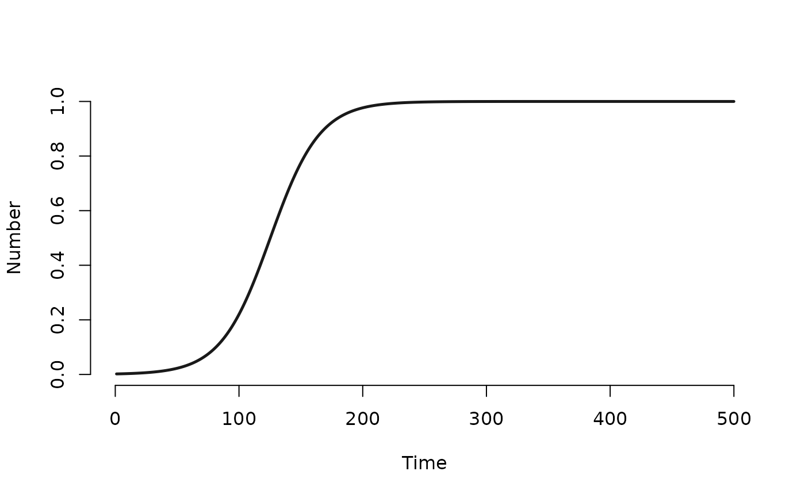
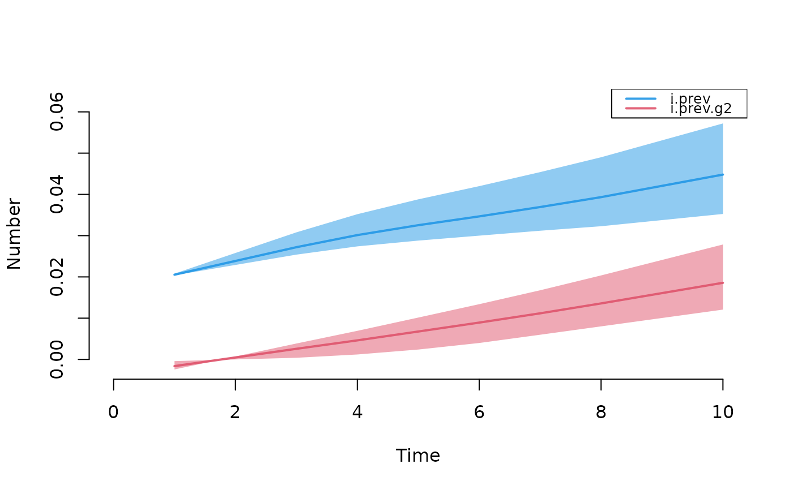

Inspired by dplyr::mutate, mutate_epi adds new
variables to the epidemiological and related variables within
simulated model objects of any class in EpiModel.
Examples
# DCM example
param <- param.dcm(inf.prob = 0.2, act.rate = 0.25)
init <- init.dcm(s.num = 500, i.num = 1)
control <- control.dcm(type = "SI", nsteps = 500)
mod1 <- dcm(param, init, control)
mod1 <- mutate_epi(mod1, prev = i.num/num)
plot(mod1, y = "prev")

# Network model example
nw <- network_initialize(n = 100)
nw <- set_vertex_attribute(nw, "group", rep(1:2, each = 50))
formation <- ~edges
target.stats <- 50
coef.diss <- dissolution_coefs(dissolution = ~offset(edges), duration = 20)
est1 <- netest(nw, formation, target.stats, coef.diss, verbose = FALSE)
#> Starting maximum pseudolikelihood estimation (MPLE):
#> Obtaining the responsible dyads.
#> Evaluating the predictor and response matrix.
#> Maximizing the pseudolikelihood.
#> Finished MPLE.
param <- param.net(inf.prob = 0.3, inf.prob.g2 = 0.15)
init <- init.net(i.num = 1, i.num.g2 = 0)
control <- control.net(type = "SI", nsteps = 10, nsims = 3,
verbose = FALSE)
mod1 <- netsim(est1, param, init, control)
mod1
#> EpiModel Simulation
#> =======================
#> Model class: netsim
#>
#> Simulation Summary
#> -----------------------
#> Model type: SI
#> No. simulations: 3
#> No. time steps: 10
#> No. NW groups: 2
#>
#> Fixed Parameters
#> ---------------------------
#> inf.prob = 0.3
#> inf.prob.g2 = 0.15
#> act.rate = 1
#> groups = 2
#>
#> Model Output
#> -----------------------
#> Variables: s.num i.num num s.num.g2 i.num.g2 num.g2
#> si.flow si.flow.g2
#> Networks: sim1 ... sim3
#> Transmissions: sim1 ... sim3
#>
#> Formation Statistics
#> -----------------------
#> Target Sim Mean Pct Diff Sim SE Z Score SD(Sim Means) SD(Statistic)
#> edges 50 45.567 -8.867 2.618 -1.693 11.851 10.2
#>
#>
#> Duration Statistics
#> -----------------------
#> Target Sim Mean Pct Diff Sim SE Z Score SD(Sim Means) SD(Statistic)
#> edges 20 17.833 -10.833 0.949 -2.284 3.277 2.834
#>
#> Dissolution Statistics
#> -----------------------
#> Target Sim Mean Pct Diff Sim SE Z Score SD(Sim Means) SD(Statistic)
#> edges 0.05 0.05 0.421 0.007 0.031 0.01 0.037
#>
# Add the prevalences to the dataset
mod1 <- mutate_epi(mod1, i.prev = i.num / num,
i.prev.g2 = i.num.g2 / num.g2)
plot(mod1, y = c("i.prev", "i.prev.g2"), qnts = 0.5, legend = TRUE)

# Add incidence rate per 100 person years (assume time step = 1 week)
mod1 <- mutate_epi(mod1, ir100 = 5200*(si.flow + si.flow.g2) /
(s.num + s.num.g2))
as.data.frame(mod1)
#> sim time s.num i.num num s.num.g2 i.num.g2 num.g2 si.flow si.flow.g2 i.prev
#> 1 1 1 49 1 50 50 0 50 NA NA 0.02
#> 2 1 2 49 1 50 50 0 50 0 0 0.02
#> 3 1 3 48 2 50 50 0 50 1 0 0.04
#> 4 1 4 48 2 50 50 0 50 0 0 0.04
#> 5 1 5 48 2 50 50 0 50 0 0 0.04
#> 6 1 6 48 2 50 50 0 50 0 0 0.04
#> 7 1 7 48 2 50 49 1 50 0 1 0.04
#> 8 1 8 48 2 50 49 1 50 0 0 0.04
#> 9 1 9 48 2 50 49 1 50 0 0 0.04
#> 10 1 10 47 3 50 48 2 50 1 1 0.06
#> 11 2 1 49 1 50 50 0 50 NA NA 0.02
#> 12 2 2 49 1 50 50 0 50 0 0 0.02
#> 13 2 3 48 2 50 50 0 50 1 0 0.04
#> 14 2 4 48 2 50 50 0 50 0 0 0.04
#> 15 2 5 48 2 50 50 0 50 0 0 0.04
#> 16 2 6 48 2 50 50 0 50 0 0 0.04
#> 17 2 7 48 2 50 50 0 50 0 0 0.04
#> 18 2 8 47 3 50 50 0 50 1 0 0.06
#> 19 2 9 47 3 50 50 0 50 0 0 0.06
#> 20 2 10 47 3 50 50 0 50 0 0 0.06
#> 21 3 1 49 1 50 50 0 50 NA NA 0.02
#> 22 3 2 49 1 50 50 0 50 0 0 0.02
#> 23 3 3 49 1 50 50 0 50 0 0 0.02
#> 24 3 4 49 1 50 49 1 50 0 1 0.02
#> 25 3 5 49 1 50 49 1 50 0 0 0.02
#> 26 3 6 49 1 50 49 1 50 0 0 0.02
#> 27 3 7 49 1 50 49 1 50 0 0 0.02
#> 28 3 8 49 1 50 49 1 50 0 0 0.02
#> 29 3 9 49 1 50 49 1 50 0 0 0.02
#> 30 3 10 49 1 50 49 1 50 0 0 0.02
#> i.prev.g2 ir100
#> 1 0.00 NA
#> 2 0.00 0.00000
#> 3 0.00 53.06122
#> 4 0.00 0.00000
#> 5 0.00 0.00000
#> 6 0.00 0.00000
#> 7 0.02 53.60825
#> 8 0.02 0.00000
#> 9 0.02 0.00000
#> 10 0.04 109.47368
#> 11 0.00 NA
#> 12 0.00 0.00000
#> 13 0.00 53.06122
#> 14 0.00 0.00000
#> 15 0.00 0.00000
#> 16 0.00 0.00000
#> 17 0.00 0.00000
#> 18 0.00 53.60825
#> 19 0.00 0.00000
#> 20 0.00 0.00000
#> 21 0.00 NA
#> 22 0.00 0.00000
#> 23 0.00 0.00000
#> 24 0.02 53.06122
#> 25 0.02 0.00000
#> 26 0.02 0.00000
#> 27 0.02 0.00000
#> 28 0.02 0.00000
#> 29 0.02 0.00000
#> 30 0.02 0.00000
as.data.frame(mod1, out = "mean")
#> time s.num i.num num s.num.g2 i.num.g2 num.g2 si.flow si.flow.g2
#> 1 1 49.00000 1.000000 50 50.00000 0.0000000 50 NaN NaN
#> 2 2 49.00000 1.000000 50 50.00000 0.0000000 50 0.0000000 0.0000000
#> 3 3 48.33333 1.666667 50 50.00000 0.0000000 50 0.6666667 0.0000000
#> 4 4 48.33333 1.666667 50 49.66667 0.3333333 50 0.0000000 0.3333333
#> 5 5 48.33333 1.666667 50 49.66667 0.3333333 50 0.0000000 0.0000000
#> 6 6 48.33333 1.666667 50 49.66667 0.3333333 50 0.0000000 0.0000000
#> 7 7 48.33333 1.666667 50 49.33333 0.6666667 50 0.0000000 0.3333333
#> 8 8 48.00000 2.000000 50 49.33333 0.6666667 50 0.3333333 0.0000000
#> 9 9 48.00000 2.000000 50 49.33333 0.6666667 50 0.0000000 0.0000000
#> 10 10 47.66667 2.333333 50 49.00000 1.0000000 50 0.3333333 0.3333333
#> i.prev i.prev.g2 ir100
#> 1 0.02000000 0.000000000 NaN
#> 2 0.02000000 0.000000000 0.00000
#> 3 0.03333333 0.000000000 35.37415
#> 4 0.03333333 0.006666667 17.68707
#> 5 0.03333333 0.006666667 0.00000
#> 6 0.03333333 0.006666667 0.00000
#> 7 0.03333333 0.013333333 17.86942
#> 8 0.04000000 0.013333333 17.86942
#> 9 0.04000000 0.013333333 0.00000
#> 10 0.04666667 0.020000000 36.49123